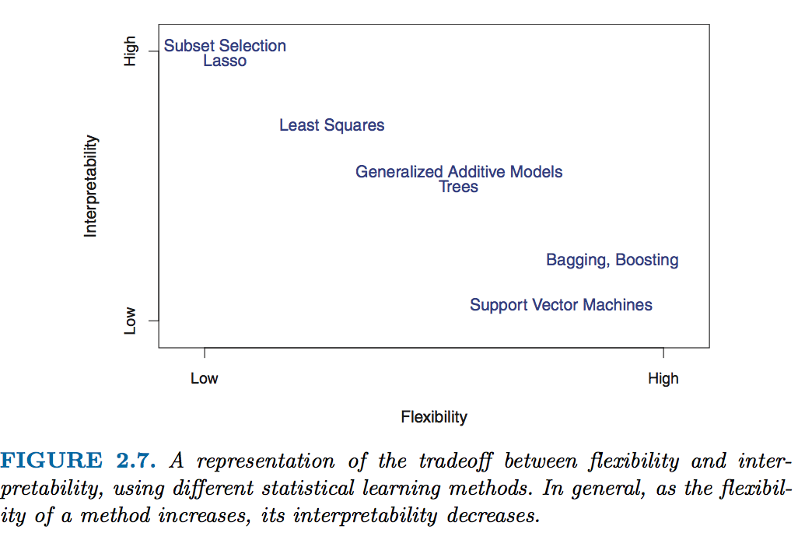

teller | Star


Welcome to the teller's website.
There is an increasing need for transparency and fairness in Machine Learning (ML) models predictions. Consider for example a banker who has to explain to a client why his/her loan application is rejected, or a healthcare professional who must explain what constitutes his/her diagnosis. Some ML models are indeed very accurate, but are considered to be hard to explain, relatively to popular linear models.
Source of figure: James, Gareth, et al. An introduction to statistical learning. Vol. 112. New York: springer, 2013. 
We do not want to sacrifice this high accuracy to explainability. Hence: ML explainability. There are a lot of ML explainability tools out there, in the wild.
The teller is a model-agnostic tool for ML explainability. Agnostic, as long as the input ML model possesses methods fit and predict, and is applied to tabular data. The teller relies on:
- Finite differences to explain ML models predictions: a little increase in model's explanatory variables + a little decrease, and we can obtain approximate sensitivities of its predictions to changes in these explanatory variables.
- Conformal prediction (so far, as of october 2022) to obtain prediction intervals for ML regression methods
The teller's source code is available on GitHub, and you can read posts about it in this blog.
Looking for a specific function? You can also use the search function available in the navigation bar.
Installing
- From Pypi, stable version:
pip install the-teller
- From Github, for the development version:
pip install git+https://github.com/Techtonique/teller.git
Quickstart
Documentation
-
For the Explainer
-
For the Comparator
References
For sensitivity analysis:
- Press, W. H., Teukolsky, S. A., Vetterling, W. T., & Flannery, B. P. (1992). Numerical recipes in C (Vol. 2). Cambridge: Cambridge university press.
- Jones E, Oliphant E, Peterson P, et al. SciPy: Open Source Scientific Tools for Python, 2001-, http://www.scipy.org/ [Online; accessed 2019-01-04]
- Scikit-learn: Machine Learning in Python, Pedregosa et al., JMLR 12, pp. 2825-2830, 2011.
For prediction intervals:
- Romano, Y., Patterson, E., & Candes, E. (2019). Conformalized quantile regression. Advances in neural information processing systems, 32.
Contributing
Want to contribute to teller's development on Github, read this!